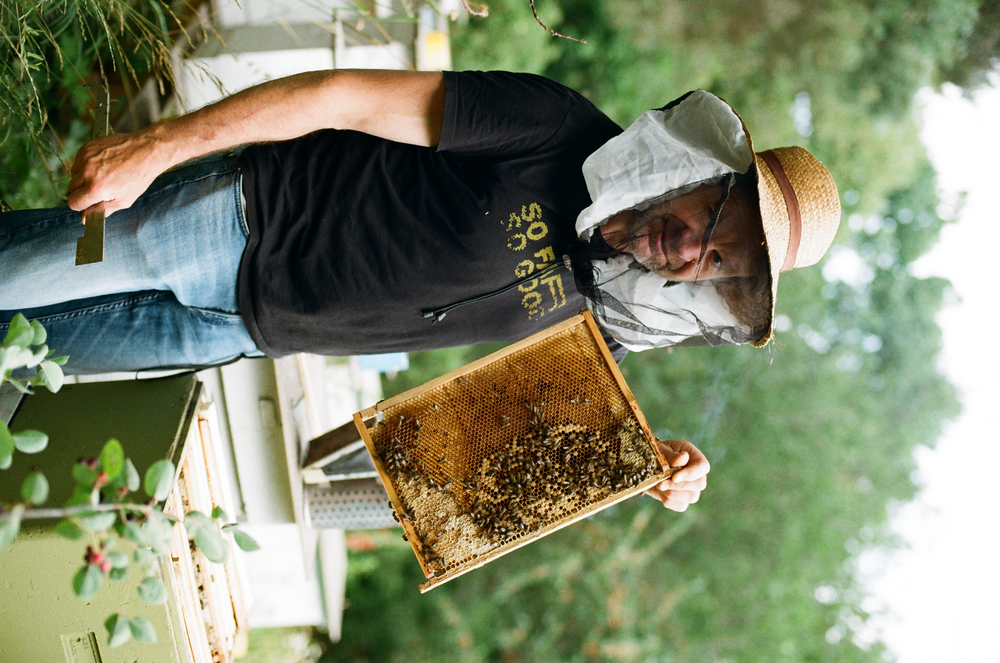
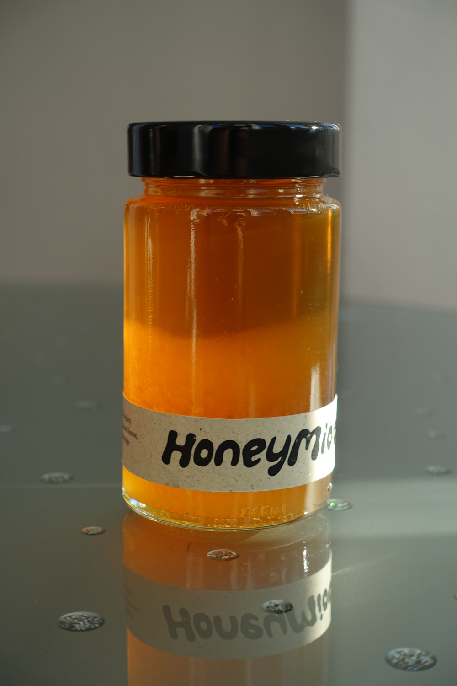
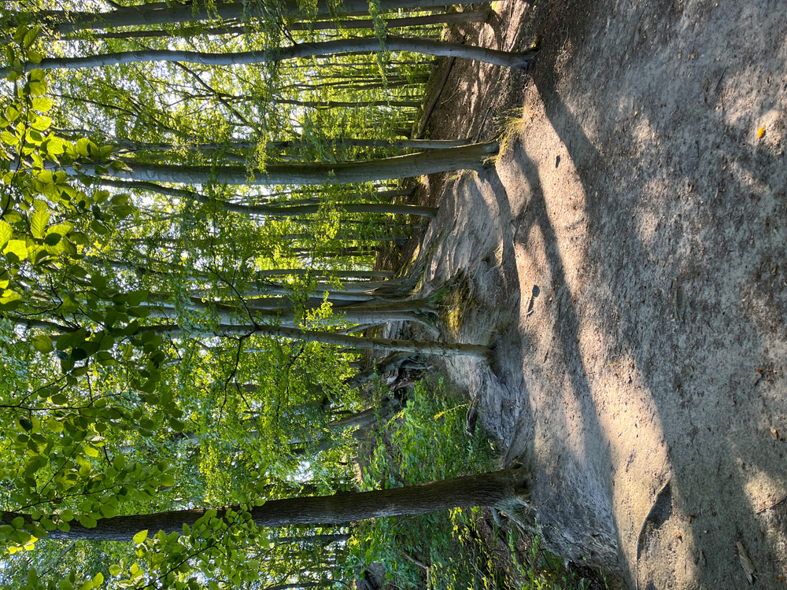
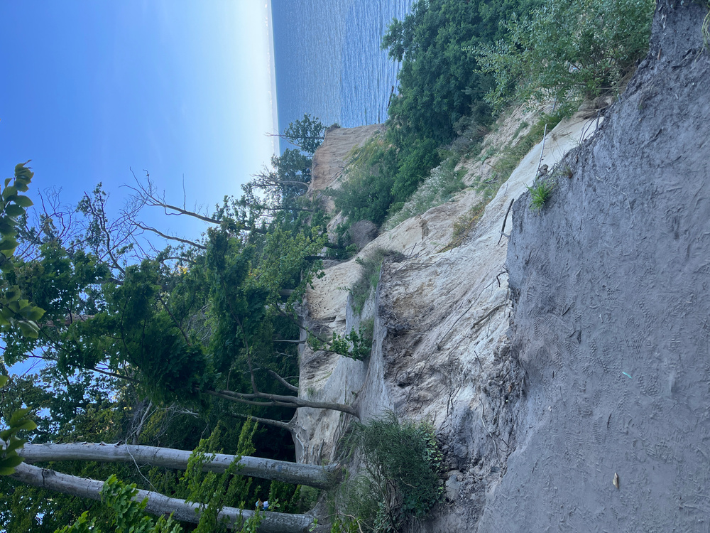
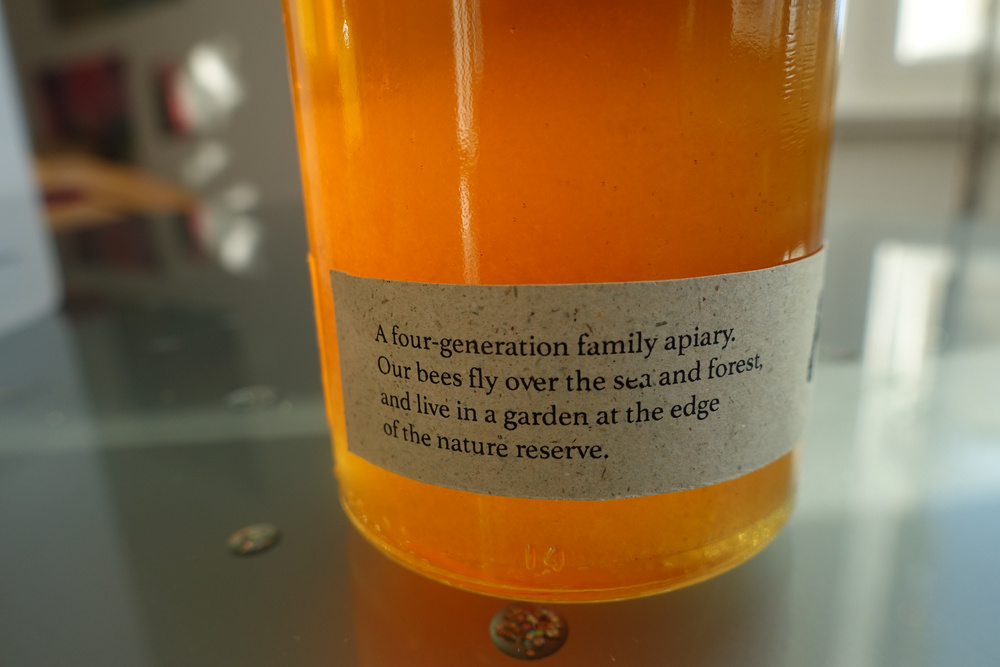
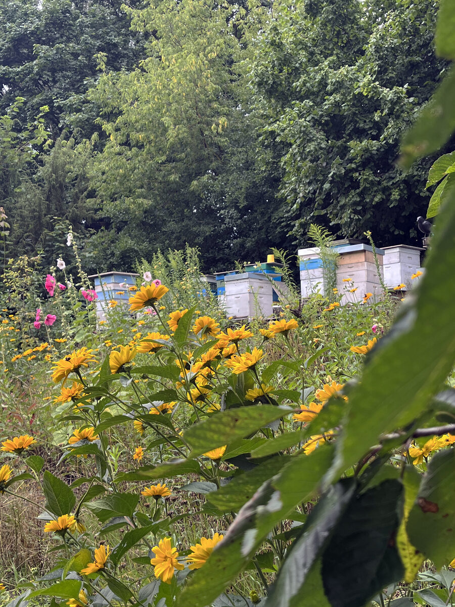
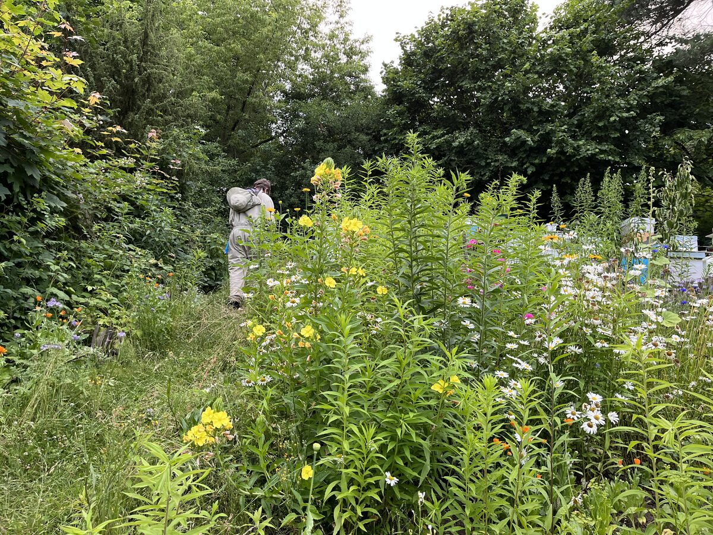
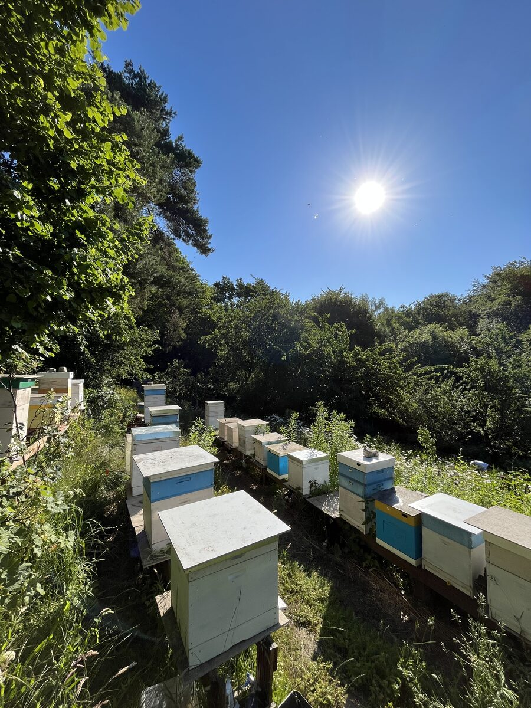

Four generations, one apiary
We have nurtured beekeeping knowledge in our family across four generations. In every jar of Honeymiood is genuine care, craftsmanship, and pure coastal nature.

A Century of Family Beekeeping
Knowledge, patience, and reverence for bees passed down from generation to generation for over a hundred years.
Great-great-grandmother Jadwiga
Founded our first family apiary and established the craft and reverence for honeybees that guides us today.
Great-grandfather Adam
Continued the apiary craft, protecting honey purity and deepening botanical knowledge of coastal flora.
Grandfather Grzegorz
Still spends every spare moment tending to the colonies and safeguarding traditional, natural methods.
Jarek
Husband to Beatka, son to Wiesia and Grzegorz — today manages the apiary in the family garden in Gdynia.
Why does the Kępa Redłowska Nature Reserve location matter?
Our apiary sits in a family garden in Gdynia, literally a few steps from the boundary of the Kępa Redłowska Nature Reserve (54°29'N 18°33'E). The bees forage on the reserve's own linden, acacia, evening primrose and wild meadows on the cliff above the Bay of Gdańsk — it's this protected coastal flora that shapes each honey's flavour bouquet.
Our apiary sits in our family garden in Gdynia, directly beside the Kępa Redłowska Nature Reserve, just steps from the Baltic coast. Linden, acacia, evening primrose, cornflowers, wild clover, dandelion, and blackberries flourish here.
Our bees thrive in this quiet paradise — their calm temperament is proof. Our honey is exceptionally aromatic and rich in natural character thanks to this pristine seaside microclimate.

Moments from the Apiary
Daily rhythm around the hives, gentle work with the bees, and the coastal meadows of Kępa Redłowska.





